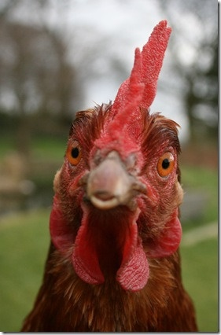

兩減肥藥含西布曲明勿服用
衞生署調查有市民報稱經互聯網購入名為「十天瘦」和「酷秀靶向減肥丸」的查詢後，抽取產品樣本化驗，結果發現含西藥成分西布曲明及西布曲明類似物，但包裝上並無標明，市民服後可能出現嚴重副作用。該署呼籲市民不要購買及服用，如服用後不適，應盡快求醫。
more-
旺季雞價揚 卜蜂、大成獲利衝
天冷進補、農曆春節旺季需求加上疫情干擾，小雞價格飆上30元的天價，帶動白肉雞每台斤價格上漲至30元以上高價，土雞、雞蛋價格也創波段新高，卜蜂（1215）、大成（1210）去年第四季營運看俏。
-
他害羞不敢找女生說話 把驢子性侵到死
肯亞一名20歲男子穆里提(Naftaly Muriithi)被當地鄉民發現，對一頭驢子性侵，甚至性侵到死。
-
15少年集體性侵驢子 全染上狂犬病
摩洛哥傳出有15名少年在性侵一隻染病的驢子之後，集體罹患狂犬病，現在所有染病少年已住院接受治療，但這已經引起各少年家族與當地民眾的恐慌。
-
倭猩猩愛雜交 是愛與和平的表現
「雜交」在人類社會裡，是負面又不衛生的行為，但在倭猩猩的社會團體裡，可能是愛與和平的表現。
-
律師王宇庭上抗議違法遭法警暴力拖出法院
7月2日，三河市法院對王占青等四位法輪功學員進行非法庭審，庭中辯護律師王宇抗議合議庭違法，被衝進來的7、8名法警拖出法庭外，從三樓一直拖到一樓，被重重扔到法院外的大街上。隨後，王宇律師到三河檢察院進行控告，與王宇一起代理此案的辯護律師馮延強表示對三河法院濫用職權故意傷害王宇律師的職業權等進行追責。
-
太想養！英婦騙老公 說好的小狗變大丹狗
說好的小狗呢？英國一位婦人對一隻黑白相間的大丹狗一見鍾情，心動想收養，於是與丈夫討論，丈夫向她聲明，自己不想養大狗，而婦人當然也是笑笑地答應，便真的抱了一隻「小狗」回來，向丈夫說是傑克羅素梗，沒想到幾個月後，這隻小狗如充氣般變大，丈夫才知道，這隻根本就是體型超大的「大丹狗」啊！